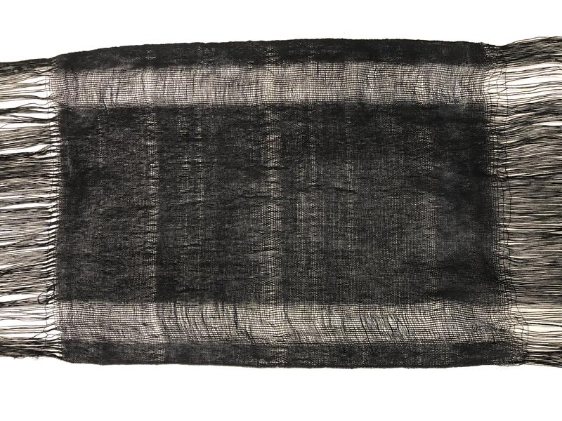
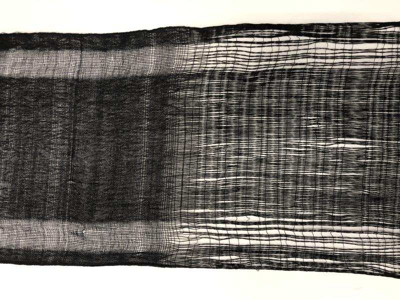

Work in progress, 2023
Constant, Two-ism
This installation will explore the interplay between textile, technology, and sensory connection given the environment it is in. The work is composed of a woven textile piece made from cotton and copper threads, which is equipped with an Arduino synthesizer that produces sound whenever someone comes near the piece. It invites the viewer to engage in a sensory experience that transforms the space into a communicative environment, where the textile piece becomes a responsive entity to human presence.
Inspired by the concept of cybernetics - which refers to the study of network and control in living and non-living systems - the use of copper threads in the textile piece are symbolic of the transmission of data and the flow of information, while the cotton represents the organic and tactile quality of the material.
With the use of Arduino in the work, it enables the weave to produce sound whenever someone comes near it. Sounds produced by the synthesizer is a representation of the relation between the viewer and the work, creating a new form of dialogue between the two entities. The produced sounds are unique to each viewer's interaction, becoming a personalized sensory experience.
Weaving as part of ‘Organ in Situ’ in het Orgelpark
Weaving with copper inserted, 150 x 300 cm
Flocked wooden panels, 300 cm
Glass sculptures inside of metal structures, 70 x 150 cm, 70 x 130 cm
Glass piece, 17 x 35 cm
Glass piece, 17 x 35 cm
Exhibition in Kunstfort bij Vijfhuizen
Weaving test, cotton yarn, 50 x 300 cm
Wood panels with applied flocking technique, 1,50 m
Glass test piece, 17 x 35 cm

Weaving, cotton yarn, 300 cm
Paintings with applied flocking technique
Fired metal, 15 x 50 cm
Cotton weaving, cotton yarn 70 x 100 cm
Wood test
Drawings made by working live in Ableton on soundscape while drawing, remembering / coding

Wooden sculptures made on turn table
Details: sculptural wooden painting that is changable in position
Weaving test
 
Plaster molds with drawings ingraved